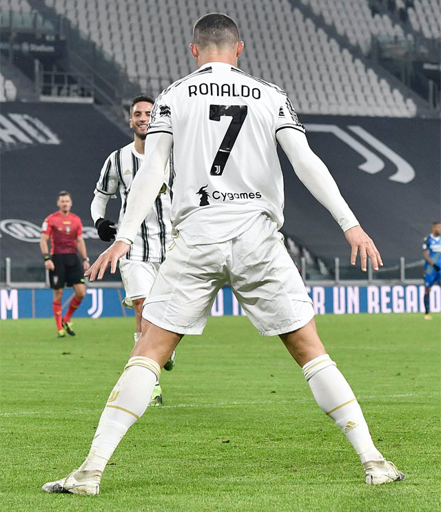

호날두
 크리스티아누 호날두 두스 산투스 아베이루(포르투갈어: Cristiano Ronaldo dos Santos Aveiro kɾiʃ'tjɐnu ʁuˈnaɫdu[*], 1985년 2월 5일~)는 포르투갈의 축구 선수로, 현재 잉글랜드 프리미어리그의 맨체스터 유나이티드와 포르투갈 국가대표팀의 일원이다. 포지션은 공격수이며, 포르투갈 주장을 맡고 있다. 2008년, 첫 발롱도르, FIFA 올해의 선수상 석권을 시작으로 2013년과 2014년에도 FIFA 발롱도르를 수상했으며, 2016년과 2017년에도 발롱도르와 FIFA 올해의 선수상을 차지하며 7회 수상자인 리오넬 메시의 뒤를 이어 발롱도르를 5회 수상한 선수이다.